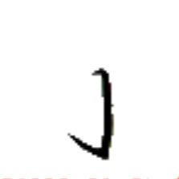
ティㇷ゚→
【針】
[名詞]
針
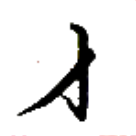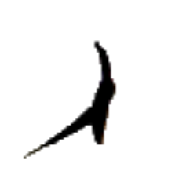
ティュン→
【左】
[連体詞]
左の
[名詞]
左
左手
ティュン→ホㇷ゚→
【左手】
[名詞]
左手
左行
ティュン→モㇰ→
【左行】
[動詞]
左折する、左に行く
右左
キュー→ティュン→
【右左】
[名詞]
横、傍ら
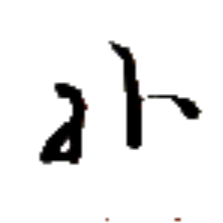
キュー→ティュン→
【横】
[名詞]
横、傍ら
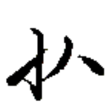
アイㇷ゚→
【倒】
[動詞]
倒れる
[動詞]
倒す、打ち倒す
彼心倒官
チャㇷ゚⤴ヒアー→アイㇷ゚→ユー→
【彼心倒官】
彼は政府を転覆したい。
闇倒
ホエゥㇳ·アイㇷ゚→
【闇倒】
[動詞]
気絶する、失神する
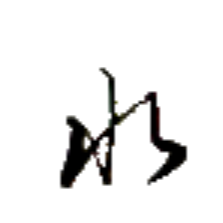
モウ→
【米】
[名詞]
米、米飯
[略号]
(音楽)基準音の10半音上の音、(移動ドで)ラ♯・シ♭の音
膠米
バイㇳ·モウ→
【膠米】
[名詞]
粘り気のある米
風火米
プアー⤴カン→モウ→
【風火米】
[名詞]
蒸しご飯
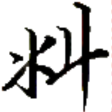
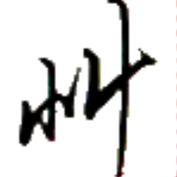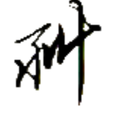
カㇳ⤴
【秋】【穐】
[名詞]
秋
草手下行於秋
コㇳ·ホㇷ゚→ウㇳ⤴モㇰ→イェ·カㇳ⤴
【草手下行於秋】
葉は秋に落ちる。
秋犬
カㇳ⤴パー⤴
【秋犬】
[名詞]
カトパ（地名）
 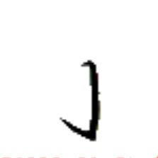
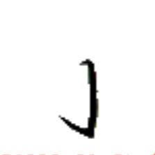
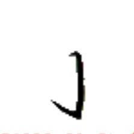
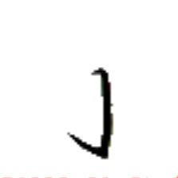
 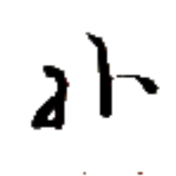
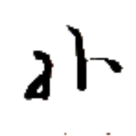

 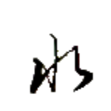
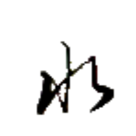
 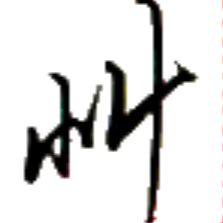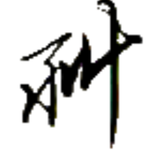
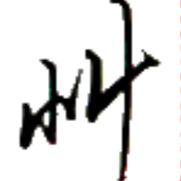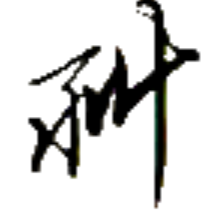